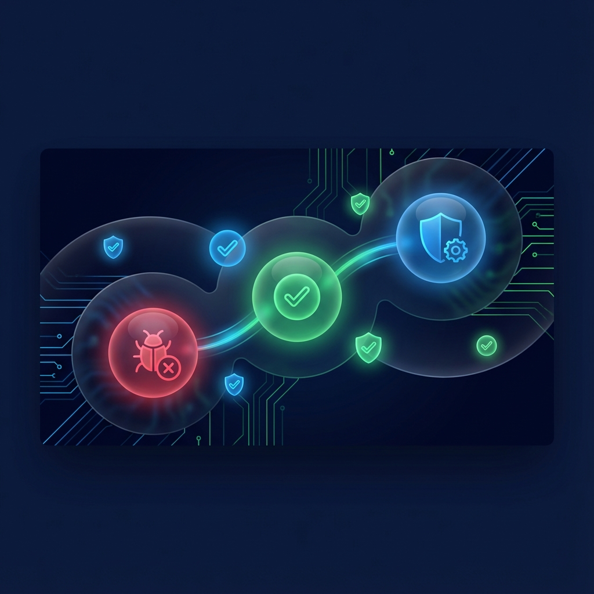

Agent Harnesses, Kernels & Control Planes
Production-grade execution kernels, in-flight steering engines, and OS-level sandboxes built inside the lab.

Agent Kernel (`agent_kernel`)
Framework-free Python 3.12 execution harness featuring a 7-state FSM, Tri-State Memory Quarantine (0.0% contradiction writes in Synthea stress tests), Hybrid RRF RAG, 25-microsecond Knowledge Graph traversal, and 165 automated Pytest regression gates.
Inspect Kernel Specification →
Steering & Graph Verifier
Runtime compiler for regulated specs (80-page Pharma SmPC dossiers, SNOMED/MedDRA ontologies, and ISO 14971 risk graphs). Intercepts OTLP spans for bounded 2-retry hot-context steering.
Read Architecture Paper →
AegisMCP Kernel Sandbox
OS-native sandboxing proxy written in Rust for Anthropic's Model Context Protocol (`stdio`). Blocks prompt-injection filesystem and socket exfiltration at the kernel syscall boundary.
Inspect Rust Architecture →AgentOps & Trust Protocol
Runtime governance and risk-scoring architecture for autonomous agent fleets with trace inspection, step-budget tracking, and cryptographic audit receipts.
Inspect Governance Study →